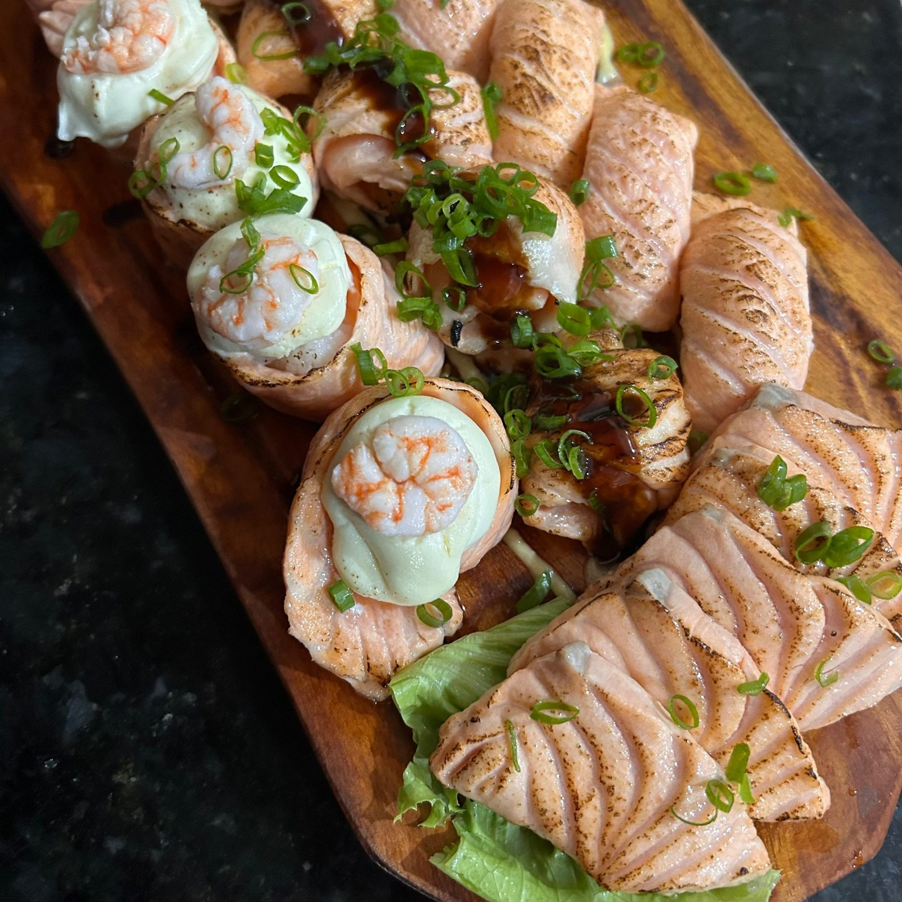

Início · Receitas do Chef
Receitas do Chef Silvio Trindade
No cardápio da Sumô, duas receitas levam a assinatura do chef e dono da casa: o Tokoyaki e o Sakumaki.
Tokoyaki
Bolinho japonês, 4 unidades por R$ 25,00
“Uma criação do nosso Chef. Silvio Trindade: Bolinho japonês com arroz, salmão, kani e cream cheese, empanado e frito.”Cardápio da Sumô
Sakumaki
Massa fina frita, R$ 30,00 a unidade
“Uma criação do nosso Chef. Silvio Trindade: Massa fina frita com base de farinha de trigo, com arroz e recheio da escolha do cliente.”Cardápio da Sumô
Recheios: Califórnia, salmão simples, salmão completo, salmão sensei, salmão com kani, salmão com camarão, salmão frito, salmão frito especial, salmão mix, salmão Dojô, salmão 23, camarão, camarão especial e camarão frito.
O Chef
A história contada no Lidi Talks
“Neste corte do Lidi Talks, Silvio Trindade compartilha um pouco da história da Sumô Temakeria e conta sobre sua experiência nessa trajetória.”Instagram da Sumô, 26/09/2026
A Sumô também conta a própria história na série SUMÔ X, no Instagram. A casa tem CNPJ aberto desde 2017, em Paripe.
Do Chef
Ceviche, yakissoba e o Combo do Chef
Ceviche do Chef · R$ 50,00
250 g.
Yakissoba do Chef
R$ 42,00 (400 g), R$ 75,00 (800 g), R$ 80,00 (1 kg).
Combo do Chef
De 10 peças (R$ 35,00) a 60 peças (R$ 215,00).
Combo Dorama
20 peças maçaricadas, R$ 99,00.

Dúvidas frequentes
Perguntas comuns
Tokoyaki e Sakumaki vão no delivery?
Sim, os dois estão no cardápio de pedido.
Dá para pedir o Sakumaki com outro recheio?
O recheio é da escolha do cliente, entre os sabores do cardápio; diga qual na mensagem.
Terça a domingo, das 18h às 22h
Monte o pedido ou marque o rodízio: a mensagem chega pronta no WhatsApp da Sumô.
Delivery para 34 bairros do Subúrbio, retirada no balcão em Paripe e rodízio de terça a quinta, com reserva.